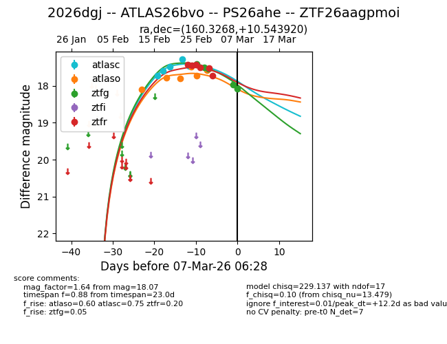
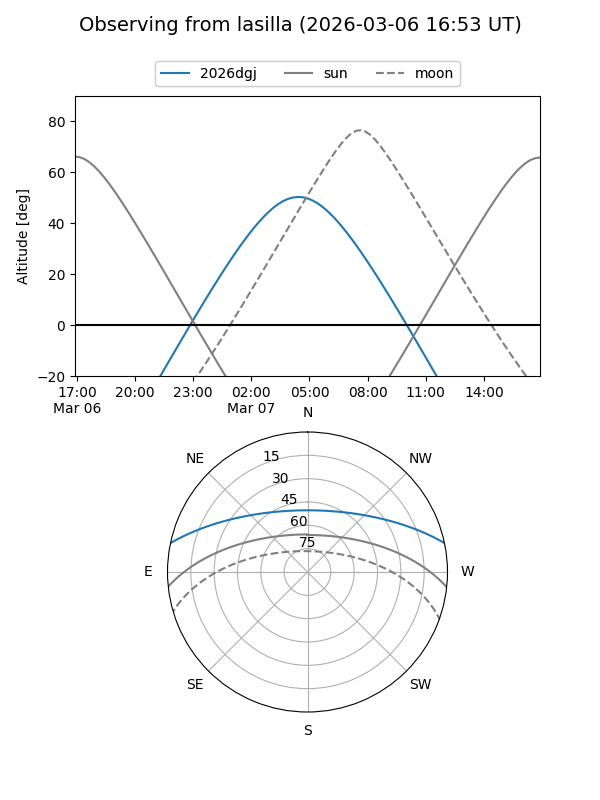
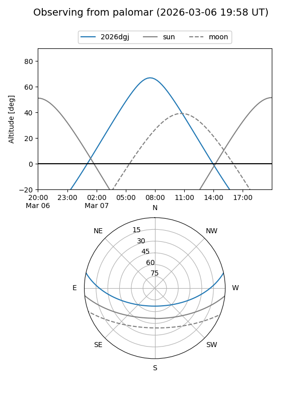
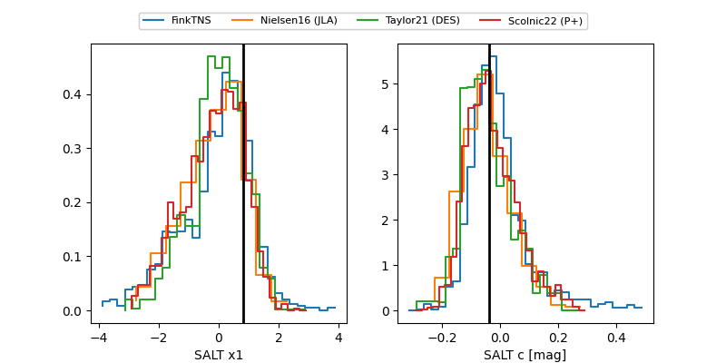

2026dgj
Target 2026dgj at 2026-03-07 06:29
Aliases and brokers:
FINK: link
Lasair: link
ALeRCE: link
TNS: link
YSE: link
alt names
ZTF26aagpmoi (ztf,fink_ztf)
2026dgj (tns,yse)
ATLAS26bvo (atlas)
PS26ahe (panstarrs)
Coordinates:
equatorial (ra, dec) = 160.3268,+10.54392
equatorial (HMS+DMS) = 10:41:18.43,+10:32:38.11
galactic (l, b) = (235.0692,+55.19568)
Flags:
Photometry:
last atlasc=17.47, atlaso=17.58, ztfg=18.07, ztfr=17.72
5 atlasc, 6 atlaso, 5 ztfg, 6 ztfr detections
Lightcurve

Visibility


Additional plots
